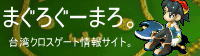
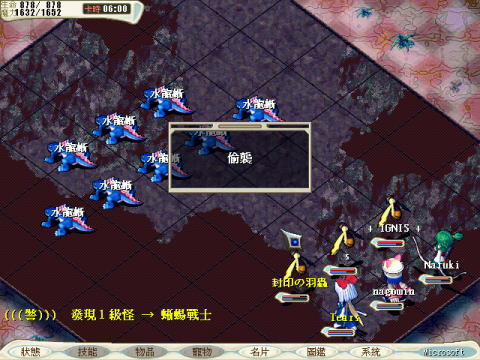

台湾クロスゲート（XＧＴ）の情報を集めたＨＰのつもりらしいです。
2009/4/1更新情報
ギルモンまじめに育てようかと・・ギルドモンスターの餌の名前の日本語訳とか分かるように作りました。
ほぼ自分用メモです。ハィ。・゜・(ノ∀`)・゜・。
2009/3/30 メンテ更新情報
逆サーバーで、期間限定の宝石祭りが始まったようです。
詳しくは、こちらのブログをどうぞ。
http://nagoman.cocolog-nifty.com/blog/2009/04/post-fe99.html
今回の期間限定も２週間だけなのかなぁ？
最近のヒトコマ。
ＳＳ整理してたら、ＯＴの頃、必死でノーマルリザ捕獲してるときのＳＳが出てきました。
台湾の課金アイテムとは便利なもので
レベル1が出ると、ヒールの音と同時に、画面にレベル１が出ましたってゆー表示が出るんです。
非常に便利なモノです(*´д｀*)

しかし、この画像は何かがちょっと変ですね・・・（・Д・＊
■台湾ＸＧ公式ページ（台湾語）→http://cg.joypark.com.tw/CG_V4.0/GROUP/download_software.asp
■台湾ＸＧwiki（日本語）→http://hagane.main.jp/xgt/wiki.cgi?page=FrontPage
日本のＸＧ情報ページがどんどん消滅してる為、
これから台湾のＸＧをプレイする方のために情報を集めたＨＰです。
他サイトの管理人さんに許可をもらって掲載した情報も多々ありますので
勝手に転載などはご遠慮下さい。
ちなみに日本人プレイヤーは一番右下の鯖。
「護」のごんべん除いた右の漢字に「子」という名前のサーバーの８にいます。
ＩＲＣでも、夜なら、チャンネル「#XGT」に誰か滞在してると思います。
＊＊ご協力サイト様＊＊
■Symphony Blue様→http://fortunestar.jp/symphonyblue/xg/sb/index.html
■しゃりしゃりパラダイス☆様→http://www.cablenet.ne.jp/~seraph-j/
このページのリンクはご自由にどうぞです！
リンクはトップページの、http://xgtt.web.fc2.com/にお願いします！
↓即席仕上げのばなーです。